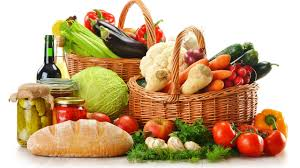
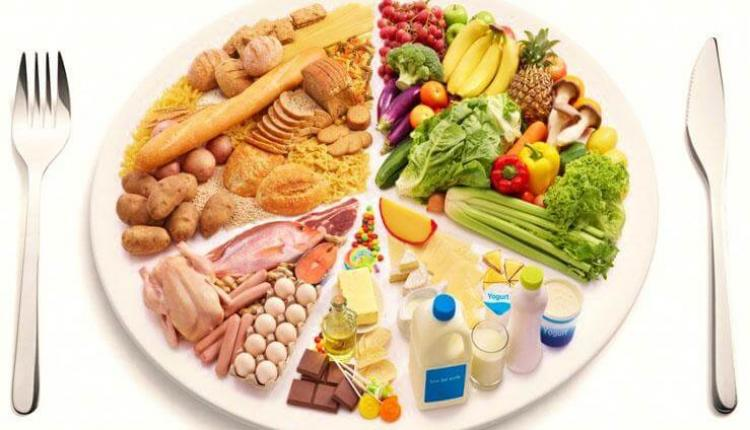
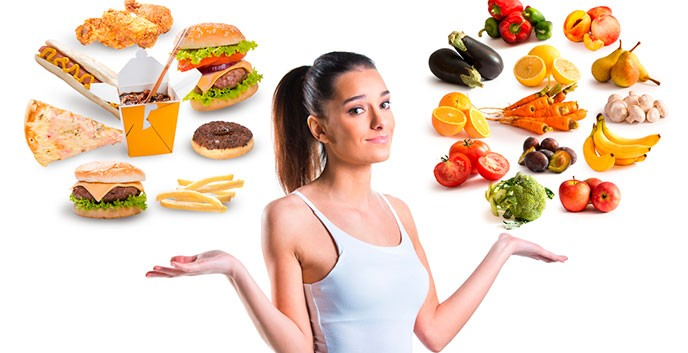

¿Te has preguntado alguna vez si la nutricion es importante
y la salud están relacionados? ¿Crees que comer sano sea
importante? ¡Desde luego que sí! al igual que un automovil
necesita combustible y mantenimiento constante para funcionar
adecuadamente, el cuerpo requiere alimento, ejercicio y una
buena actitud mental, para mantenerse sano y desarrollar su
potencial al máximo. De ahí la importancia de la buena
alimentación.
La Alimentación es necesaria en todos los seres vivos, tanto
en los animales como en los Seres Humanos, y es por ello que
debemos tener una equilibrada incorporación de nutrientes a
nuestro organismo, lo que muchas veces es referenciado como
Buena Alimentación, siendo fundamental su cumplimiento para el
desarrollo de la vida y de las distintas actividades cotidianas.
¿Qué es una buena nutrición?

Una buena alimentación significa que tu cuerpo obtiene
todos los nutrientes, vitaminas y minerales que necesita
para trabajar correctamente. Para ello debes aprender a planear
tus comidas y colaciones inteligentemente, de modo que sean ricos
en nutrientes y bajos en calorías.
Se suele vincular justamente a la Buena Alimentación con
los deportes, a una vida con ejercicios ya que se suelen
adoptar Dietas Equilibradas para poder suplementar estas
actividades físicas, mientras que por el contrario los
desequilibrios alimenticios suelen relacionarse más bien
con una Vida Sedentaria y carente de ejercitación física.
¿Qué diferencia hay entre alimentación y nutrición?
 La alimentación, es un acto consciente, voluntario, educable
y social, por el cual proporcionamos a nuestro cuerpo los
alimentos "como cuando quiero", "puedo comer mucho o poco".
En definitiva, ¡de nosotros depende modificarla o no!
La nutrición, es un acto involuntario, inconsciente, que
comprende los procesos fisiológicos de digestión, absorción,
transporte, utilización y eliminación de los nutrientes.
Los nutrientes son los componentes de los alimentos que
necesitamos para desarrollar nuestras funciones vitales y, en
definitiva, para vivir. No los ingerimos directamente, ya que
forman parte de los alimentos. Estos nutrientes son:
Proteínas
Hidratos de carbono o glúcidos
Lípidos o grasas
Vitaminas
Minerales
Si queremos tener y mantener una buena salud, debemos conocer
el contenido de nutrientes de los alimentos, para pensar y
analizar si nuestra forma habitual de alimentarnos es la correcta
y para, si no lo es, modificar nuestra dieta. Mejorando nuestros
hábitos alimentarios mejoramos nuestro estado nutricional y
nuestra salud.